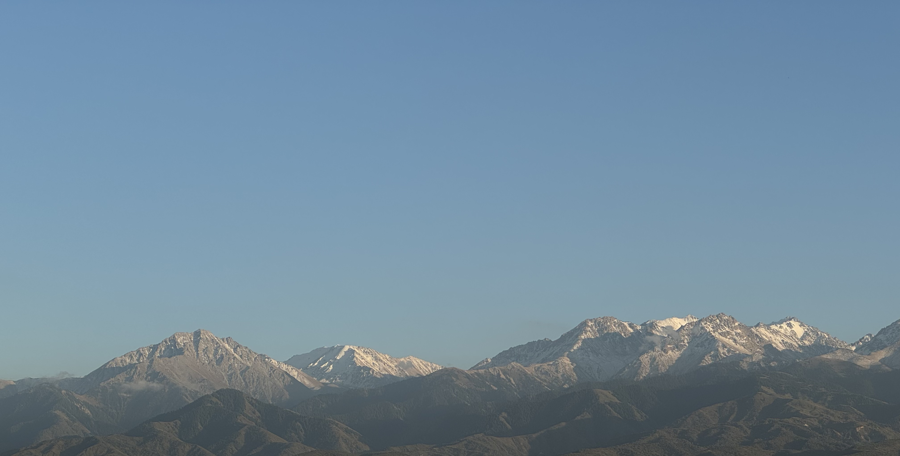
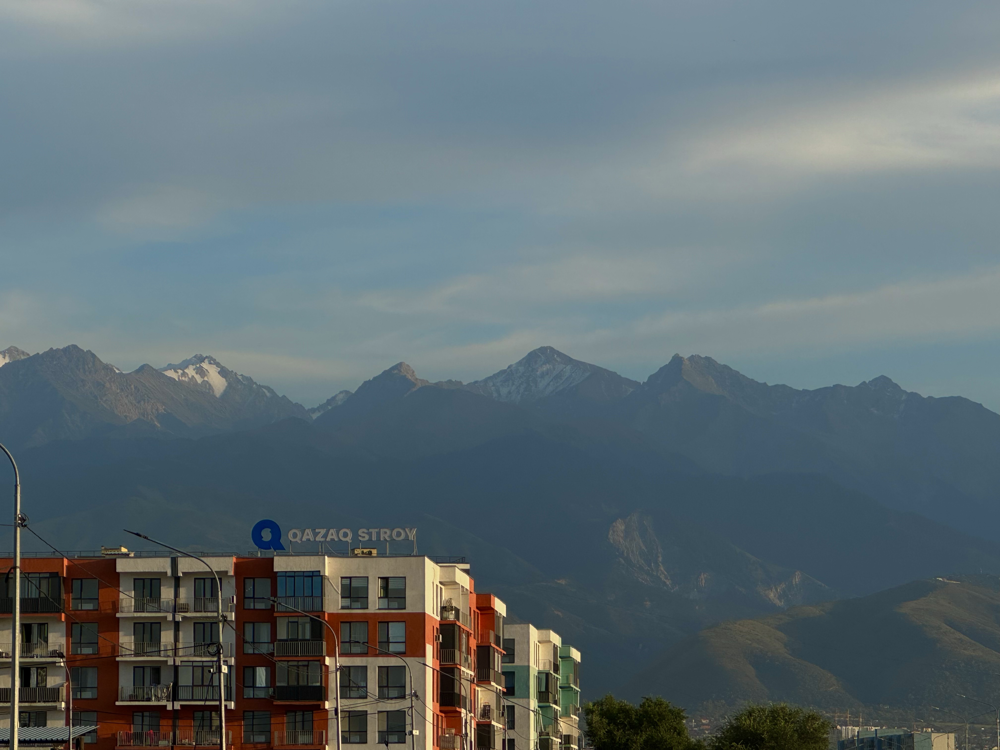
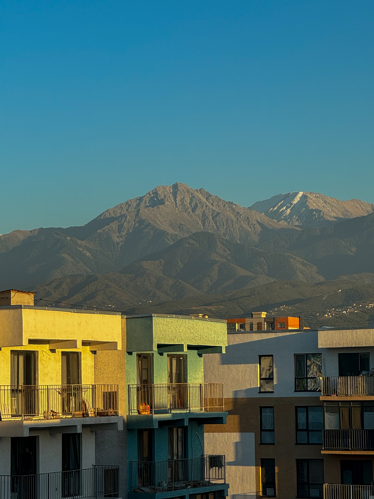
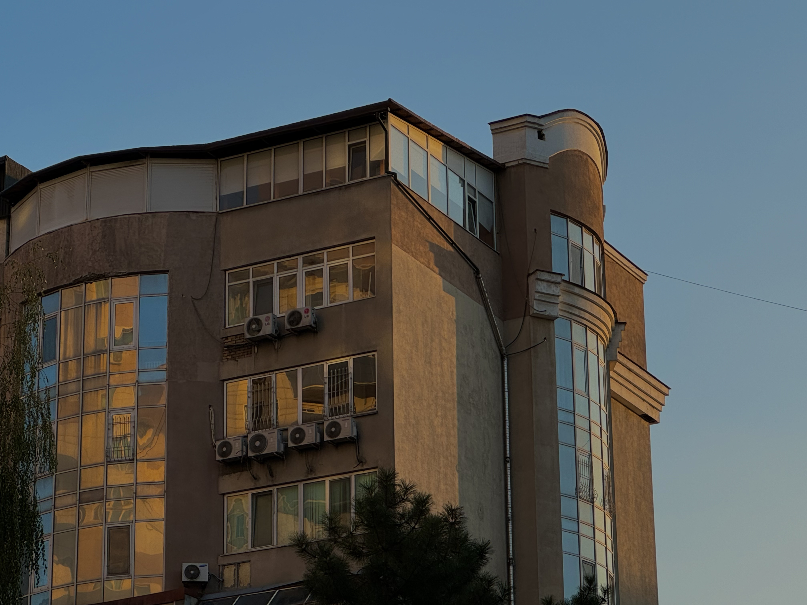
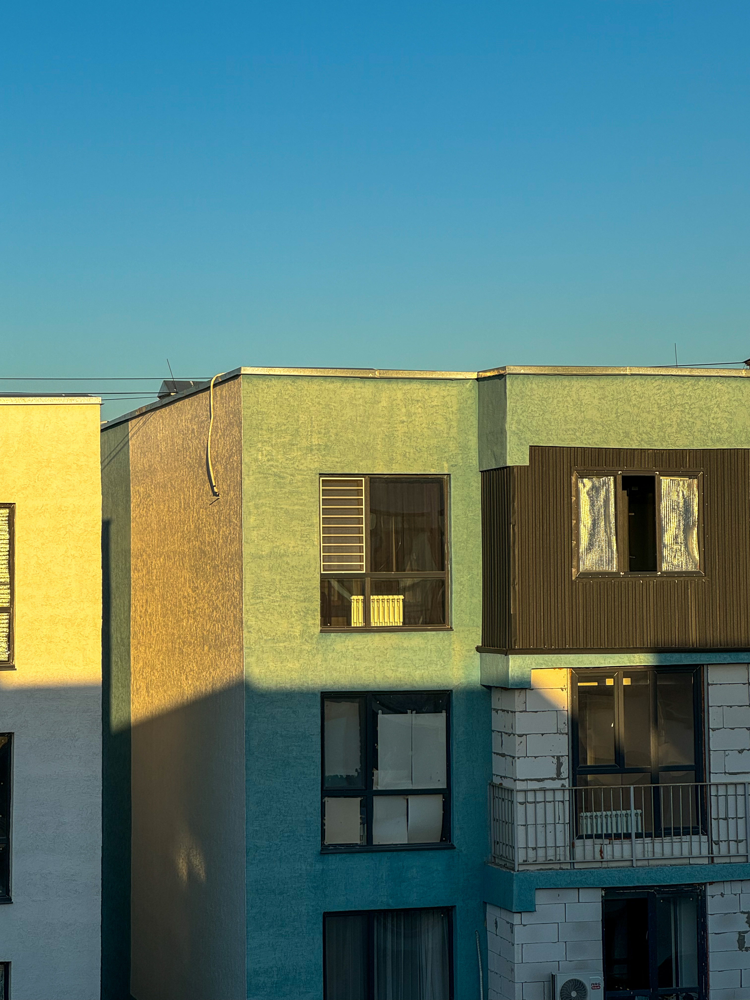
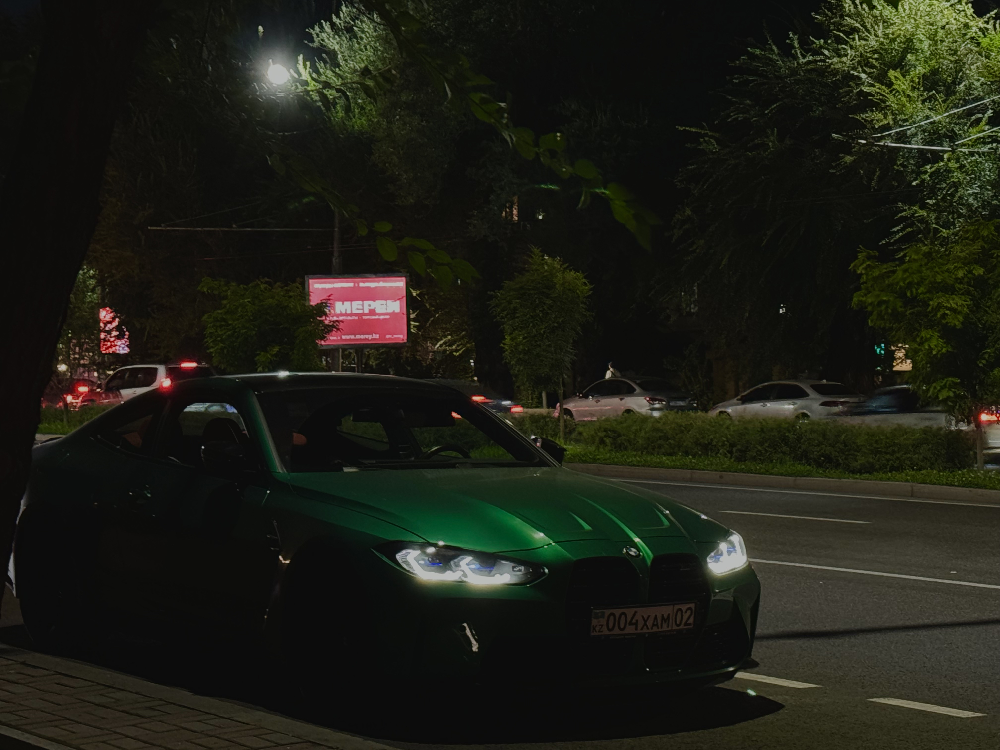

One of my greatest passions is photography, especially capturing the beauty of nature.
There’s something
truly magical about being out in the world, with a camera in hand, and finding the perfect moment to
freeze in time. Whether it’s the soft light of a sunrise, the vibrant colors of a sunset, or the
intricate details of a leaf or flower, photography allows me to see and appreciate the world in a unique
way. It’s not just about taking pictures—it’s about connecting with nature and sharing that sense of
wonder with others.







I’m also a proud member of the Zhasa club, where I’ve taken on the role of photographer. Joining the
club felt like a natural step for me, as it allows me to pursue my passion for photography even
more. I love being able to capture moments not just for myself, but for others to enjoy, and being
part of Zhasa has given me the perfect platform to do just that. It’s an experience that allows me
to grow both creatively and personally, all while doing something I truly enjoy.